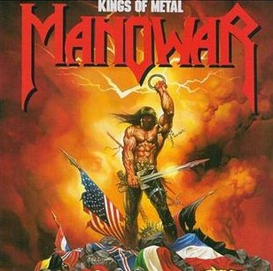

|
To light my long way home I ride a comet, my trail is long to stay Silence is a heavy stone I fight the world and take all they can give There are times my heart hangs low Born to walk against the wind Born to hear my name No matter where I stand I'm alone Stand and fight Live by your heart Always one more try I'm not afraid to die Stand and fight Say what you feel Born with a heart of steel Burn the bridge behind you, leave no retreat There's only one way home Those who laugh and crowd the path And cut each other's throats Will fall like melting snow They'll watch us rise with fire in our eyes They'll bow their heads, their hearts will hang low Then we'll laugh and they will kneel And know this heart of steel was Too hard to... |
Evime olan uzun yolumu aydınlatmak için bir kuyrukluyıldızı sürerim Yolculuğum duramayacağım kadar uzun Sessizlik, ağır bir taştır Dünyayla savaşırım ve verebildiklerinin hepsini alırım Bazen kalp atışlarım yavaşlar Rüzgara karşı yürümek için, Adımı duymak için doğmuşsun Nerede olursam olayım, yalnızım Dayan ve savaş, Kalbinle yaşa Her zaman bir şans daha vardır Ölmekten korkmuyorum Dayan ve savaş, Söyle ne hissediyorsun Çelik bir kalple doğmuşsun Arkandaki köprüyü yak, geriye dönüş yolu bırakma Eve giden tek bir yol var O gülenler ve yolu tıkayanlar Ve birbirlerinin gırtlağını kesenler Eriyen kar gibi düşecekler Bizim yükselişimizi izleyecekler, gözümüzdeki ateşle Başlarını eğecekler, kalpleri yavaşlayacak İşte o zaman biz güleceğiz ve onlar diz çökecekler Ve Bu çelik kalbin kolay kolay kırılamayacağını görecekler Çok zor... |
|